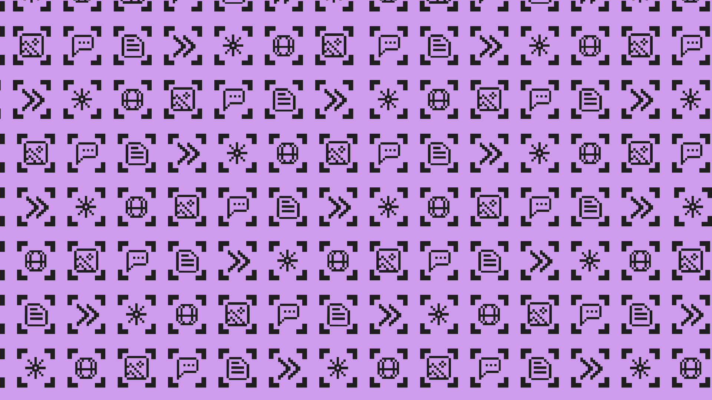
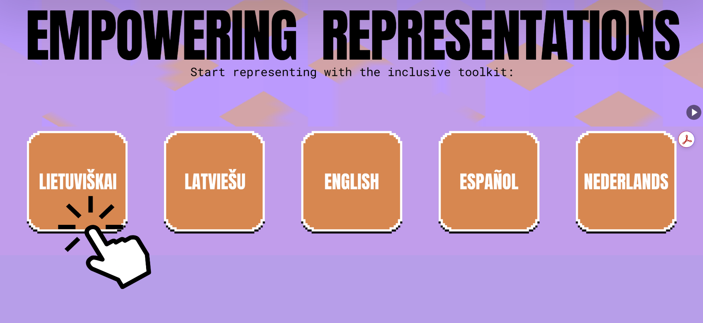
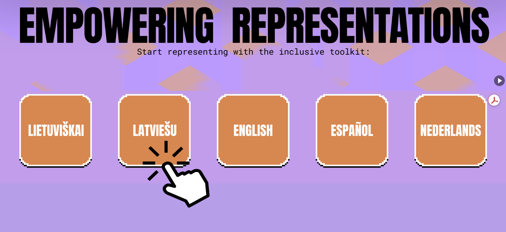
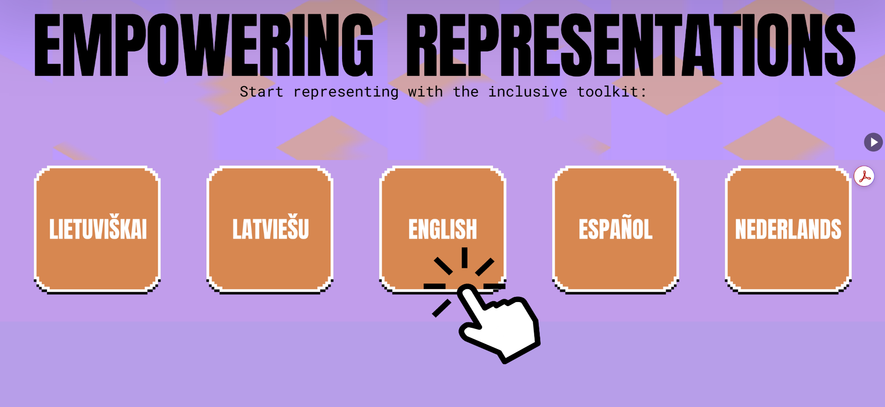
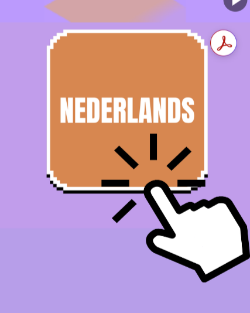

APIE PROJEKTĄ
„Erasmus+“ finansuojamo projektas „Empowering Through Representation“ yra skirtas kurti įtraukesnę ir kultūriškai jautresnę socialinių ir kultūrinių grupių reprezentaciją. Šis įrankis sukurtas bendradarbiaujant su jaunimu ir jaunimo organizacijomis, pripažįstant atstovaujamų bendruomenių balso, patirties ir įtraukties svarbą. Pasitelkiant tyrimus, bendrakūros procesus ir bendradarbiaujant tarptautiniu mastu, projekto metu kuriamas daugiakalbis įrankis ir mokymo programa jaunimo darbuotojams, medijos profesionalams, socialiniams aktyvistams, menininkams, ir kitiems, kurie dirba reprezentacijos ir advokatavimo srityse. Šio projekto tikslas – skatinti įtraukesnes praktikas, kovoti su stereotipais ir išankstinėmis nuostatomis, ir prisidėti prie pagarbesnio įvairių bendruomenių reprezentavimo Europoje. Projektą, kurį iš dalies finansuoja Europos Sąjungos programa „Erasmus+“, įgyvendina Taikomosios antropologijos organizacija „Anthropos“ (Lietuva), „Stichting Caat Projects“ (Nyderlandai), „Izglitibas Iniciativu Centrs“ (Latvija) ir „Ecos do Sur“ (Ispanija).
METODINIŲ PRIEMONIŲ MEDŽIAGOS VERTĖ IR IŠSKIRTINUMAS
„Empowering Through Representation“ metodinių priemonių rinkinys padeda pereiti nuo paviršutiniško įvairovės demonstravimo prie tikro, atsakingo ir bendradarbiavimu grįsto reprezentavimo.
Metodinių priemonių medžiagos išskirtinumas – dėmesys ne tik tam, kaip vaizduojamos skirtingos socialinės ir kultūrinės grupės, bet ir kas turi galią jas vaizduoti, kas priima sprendimus ir ar pačios bendruomenės gali dalyvauti kuriant savo reprezentaciją.
Šis rinkinys gali būti naudojamas tiek individualiam mokymuisi ir profesinei refleksijai, tiek grupiniuose mokymuose, dirbtuvėse ar organizacijų veiklos planavime. Jis suteikia galimybę įvertinti jau kuriamą turinį, atpažinti galimas reprezentavimo problemas ir ieškoti konkrečių būdų, kaip kurti įtraukesnę aplinką.
APIE PROJEKTO METODINĮ PRIEMONIŲ RINKINĮ
„Empowering Through Representation“ – tai tarptautinio „Erasmus+“ projekto metu sukurtas interaktyvus metodinių priemonių rinkinys, skirtas skatinti įtraukų, etišką ir atsakingą socialinių bei kultūrinių grupių reprezentavimą. Jis padeda geriau suprasti, kaip muziejuose, švietimo priemonėse, žiniasklaidoje, organizacijų komunikacijoje ir viešajame diskurse kuriami skirtingų žmonių grupių įvaizdžiai, kokią įtaką jie daro visuomenės nuostatoms ir kaip galima išvengti stereotipų, stigmatizavimo bei simbolinio įtraukimo.
Rinkinys skirtas muziejų ir kultūros įstaigų darbuotojams, pedagogams, mokomosios medžiagos kūrėjams, žurnalistams, komunikacijos specialistams, nevyriausybinėms organizacijoms, jaunimo darbuotojams ir patiems socialinių bei kultūrinių grupių atstovams.
Metodika skatina vadovautis principu „Nieko apie mus be mūsų“ – pripažinti bendruomenių teisę pačioms pasakoti savo istorijas, dalyvauti jas reprezentuojančio turinio kūrime ir prisidėti prie sprendimų priėmimo.
Rinkinį sudaro dvi pagrindinės dalys: reprezentavimas institucijose (1) ir reprezentavimas komunikacijoje (2).
Metodinis priemonių rinkinys prieinamas internete net 5 kalbomis:
   
1. REPREZENTAVIMAS INSTITUCIJOSE: muziejai ir mokomoji medžiaga
Ši rinkinio dalis skirta muziejų darbuotojams, pedagogams, vadovėlių ir kitos mokomosios medžiagos kūrėjams bei švietimo politikos formavimo specialistams. Joje nagrinėjama, kaip kultūros ir švietimo institucijos formuoja visuomenės supratimą apie istoriją, tapatybę, kultūrinę įvairovę ir skirtingas socialines grupes.
Pagrindinė šios dalies mintis – institucijos nėra neutralios žinių perteikėjos. Jos savo pasirinkimais nusprendžia, kokios istorijos pasakojamos, kieno balsai girdimi, o kokios patirtys lieka nematomos.
Pagrindinės temos ir priemonės:
1) Institucijų vaidmuo ir galios santykiai
Aptariama, kaip muziejai ir švietimo įstaigos formuoja kolektyvinę atmintį, įteisina tam tikrus istorinius bei socialinius naratyvus ir daro įtaką tam, kaip visuomenėje vertinamos skirtingos žmonių grupės.
2) Įtraukios parodos kūrimas
Pateikiamos praktinės rekomendacijos, kaip kurti parodas bendradarbiaujant su reprezentuojamomis bendruomenėmis. Akcentuojama, kad bendruomenės turėtų ne tik konsultuoti, bet ir turėti realią įtaką sprendimams.
Taip pat pateikiami klausimai apie muziejų atsakomybę, LGBTQIA+ asmenų, žmonių su negalia ir kitų marginalizuojamų grupių reprezentavimą, kolekcijų valdymą, restituciją bei dekolonizaciją.
3) Įtraukios mokomosios medžiagos kūrimas
Šiame skyriuje analizuojama, kaip vadovėliuose, mokymosi priemonėse ir kitame edukaciniame turinyje reprezentuojamos socialinės ir kultūrinės grupės.
4) Gerosios praktikos ir pavyzdžiai
Pristatomi Europos švietimo programų, vadovėlių ir muziejų pavyzdžiai, susiję su romų ir kitų mažumų reprezentavimu.
Analizuojama, kaip muziejai gali bendradarbiauti su bendruomenėmis, kokią reikšmę turi tiesioginis santykių kūrimas, tarpininkavimas, bendra atsakomybė ir bendruomenių dalyvavimas kuriant parodas bei edukacinį turinį.
5) Interaktyvūs žaidimai
2. REPREZENTAVIMAS KOMUNIKACIJOJE: medija, savireprezentacija ir advokatavimas
Antroji rinkinio dalis skirta žurnalistams, komunikacijos ir reklamos specialistams, nevyriausybinėms organizacijoms bei žmonėms, norintiems patiems reprezentuoti save ir savo bendruomenes.
Joje nagrinėjama, kaip komunikacijoje kuriami naratyvai, kokią įtaką jie daro visuomenės nuostatoms ir kaip komunikacija gali prisidėti prie socialinių pokyčių arba, priešingai, stiprinti diskriminaciją ir atskirtį.
Pagrindinės temos ir priemonės:
1) Pagarbaus komunikavimo pagrindai
Pristatomi naratyvų kūrimo principai ir komunikacijos psichologija, lyginami naratyvai, pateikiamos priemonės, padedančios geriau pažinti tikslinę auditoriją, suprasti jos vertybes, motyvaciją ir galimus barjerus.
Remiamasi Shalomo Schwartzo pagrindinių žmogiškųjų vertybių teorija, aptariamas komunikacijos įrėminimas ir jo poveikis socialiniam elgesiui.
Atskiras dėmesys skiriamas įtraukčiai reklamoje – kaip išvengti paviršutiniško įvairovės demonstravimo ir užtikrinti, kad reprezentacija būtų prasminga, autentiška bei paremta realiu įsipareigojimu.
2) Komunikacijos forma ir reprezentavimo pasirinkimai
Šiame skyriuje analizuojama, kaip skirtingi komunikacijos elementai veikia žmonių reprezentavimą.
Daug dėmesio skiriama vizualinei etikai: kaip vaizduoti pažeidžiamas grupes, kaip išvengti jų viktimizavimo, kodėl svarbu žmones rodyti kaip aktyvius visuomenės dalyvius.
Taip pat aptariamas nepilnamečių ir pažeidžiamų asmenų atvaizdų naudojimas, sutikimo svarba ir alternatyvūs vizualinės komunikacijos sprendimai.
3) Informacijos šaltiniai ir etiškas istorijų pasakojimas
Pateikiamos rekomendacijos žiniasklaidai ir komunikacijos specialistams, kaip užtikrinti šaltinių įvairovę, suteikti erdvės mažiau girdimiems balsams ir išvengti vienpusiško socialinių grupių vaizdavimo.
Atskirai analizuojama migracijos komunikacija. Pateikiami skirtingi būdai, kaip galima kalbėti apie migraciją – kaip apie krizę, problemą, ekonominį išteklių ar natūralų socialinį procesą.
4) Aktyvi etiško atstovavimo prieiga
5) Savireprezentacija: kaip pasakoti savo istoriją?
Tai viena iš svarbiausių rinkinio dalių, skirta pačioms bendruomenėms ir jų nariams.
Pabrėžiama, kad žmonės patys geriausiai išmano savo patirtis ir turi teisę nuspręsti, kaip jas pristatyti.
Taip pat aptariama pasakojimo galia ir skirtingos savireprezentacijos formos: asmeninės ar kolektyvinės istorijos, realistinis ar simbolinis pasakojimas, konkretus ar abstraktus kūrybinis pateikimas.
Svarbi šio skyriaus žinutė – žmonės patys sprendžia, ar, kada, kur ir kokiu būdu dalytis savo istorijomis. Akcentuojama ir savirūpa bei asmeninių ribų paisymas.
6) Įtraukaus reprezentavimo principai
Apibendrinami keturi pagrindiniai principai, kuriais turėtų būti vadovaujamasi kuriant komunikaciją.
7) Interaktyvūs žaidimai
Parengė Taikomosios antropologijos organizacija „Anthropos“
VISOS MŪSŲ PUBLIKACIJOS
TAIKOMOSIOS ANTROPOLOGIJOS ORGANIZACIJA „ANTHROPOS“
Registracijos kodas: 304743335
PVM mokėtojo kodas: LT100018477116*
Registracijos adresas: Laisvės al. 110, LT-44253, Kaunas, Lietuva
Banko sąskaita: Luminor LT 20 4010 0510 0419 3055
El. paštas: taikomoji.antropologija@gmail.com
Mob. telefono nr.: +37065350308 (Ugnė Barbora Starkutė)
* PVM neskaičiuojamas. Taikoma smulkaus verslo schema Lietuvoje.